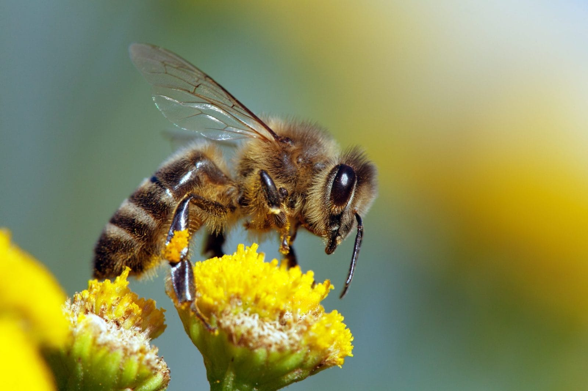

The Honey Bee
Honey bees are a vital part of nature as they pollinate the plants around them helping them to grow. In the UK it is estimated that all pollinators contribute more than £400 million to the agricultural economy. This is about £1.5 Billion once the food reaches supermarkets. Sadly the honey bee is in decline. It is belived that this is due to pesticides, single crop farming and modifications to the landscape, and climate change.
The Colony
The average size of a bee colony can vary greatly. In the winter they can be as low 10,000 and in the heigth of the summer they can be around 60,000. The diffrent bees are the queen in which there is one of, 1000 - 2000 male drones in the summer, and 10,000 - 60,000 female workers depending on the time of year.
The history of bees
Bees have been around for many millions of years. The honey that they produce have meant that animals with a protective coating from bee stings have been able to harvest it for a tasty treat. As humans however we do not have this coating but have created equiptment and ways to be able to not only harvest honey but also care for a colony. We are able to trace honey bees back to 40 million years ago and their ancestors as far back as 200 million years ago. Are ways of dealing with bees have changed over the many years but a reasons are still the same. To harvest the delicious honey.
The Three Bees

Drones
Drones are male bees. Their primary job is to mate with the queen in which after the mating they die. They tend to visit alot of diffrent colonies. They are bron from an unfertilised queen egg. They are bigger than worker bees and therefore their cell is also large. This can help the queen to determim the ratio between worker bees and drones. The drone takes longer to hatch than worker bees but when he does and matures (which takes around 10 days) he will go out on a mating flight in search of virgin queen bees. Drones tend to live for around 40 days. A colony can have around 200 to 1000 drones at any time. Other colony drones will also add to the colony numbers as they look for a queen.
Workers
Workers are sterile female bees. They are produced from a fertilised egg from a queen. When the egg has hatched other workers will feed the larva nutritious food from their glands. This is done for around 6 days as that is when the larva is fully grown. The cell the larva is in is then sealed with a capping of wax and pollen. After a further 12 days the worker breaks the capping and emerges. A colony is mainly filled with workers. They can be as many as 60,000 in the summer and 15,000 in the winter. In the summer they love for around 6 weeks and in the winter they can live for around 6 months. They do all the work around the hive hence the name.
The Queen
There is usually only one queen in a colony. She is a female and can often live up to 5 years The only diffrence between her size and the workers size is that the queen bee as a longer abdomen. Her main job is to lay eggs. She will go out on a mating flight and once successfully mated will head back to the hive. The workers will feed the queen so she can lay eggs. The more food she gets the more eggs she can lay. The queen will produce pheromones to control the actions of the worker bees. This lets the colony know a queen is present and stops worker bees from laying their own eggs. Queens are hatched from normal fertilised eggs are fed somthing called royal jelly which makes them into a queen bee.